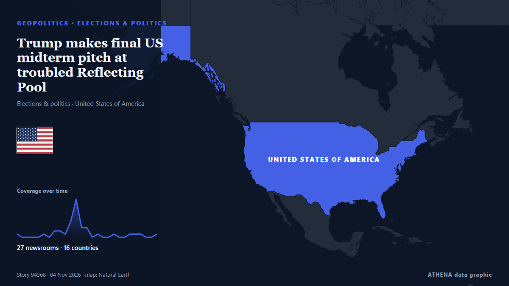

Trump makes final US midterm pitch at troubled Reflecting Pool

His speech will contrast the Republicans' efforts making the US 'safer and wealthier' with the Democrats’ 'radical, America Last agenda'. de The Straits Times
Informado de forma independiente por 26 medios de 16 países desde el 1 nov; el primero fue The Independent; la cobertura va perdiendo fuerza. ATHENA califica el riesgo como moderado (2.1/10), sobre todo por la gravedad del daño descrito y su alcance geográfico y sectorial. La confianza es del 91 % (alta): lo corroboran 26 medios independientes, con una fiabilidad media de las fuentes del 76 %. Medios por país: Estados Unidos (13), Reino Unido (3), Singapur (2). Cobertura: del 1 nov al 4 nov, 53 horas.
Por qué importa: Los hechos de seguridad y diplomacia pueden alterar alianzas, comercio y mercados mucho más allá de los países implicados.
Qué ha cambiado: 6 informaciones nuevas de 5 redacciones en las 24 horas hasta el 4 nov.
Primer titular: Trump plans closing election pitch at the Reflecting Pool after troubled revamp
Los titulares se muestran en inglés, tal como se publicaron.
De un vistazo
Seleccionado, puntuado y redactado por la metodología publicada de ATHENA. Ningún editor interviene en eventos concretos. Cómo se elabora ›
| 01 Nov 21:53 UTC | 1 |
|---|---|
| 01 Nov 23:53 UTC | 0 |
| 02 Nov 01:53 UTC | 0 |
| 02 Nov 03:53 UTC | 0 |
| 02 Nov 05:53 UTC | 0 |
| 02 Nov 07:53 UTC | 1 |
| 02 Nov 09:53 UTC | 0 |
| 02 Nov 11:53 UTC | 2 |
| 02 Nov 13:53 UTC | 2 |
| 02 Nov 15:53 UTC | 1 |
| 02 Nov 17:53 UTC | 5 |
| 02 Nov 19:53 UTC | 11 |
| 02 Nov 21:53 UTC | 3 |
| 02 Nov 23:53 UTC | 3 |
| 03 Nov 01:53 UTC | 0 |
| 03 Nov 03:53 UTC | 1 |
| 03 Nov 05:53 UTC | 0 |
| 03 Nov 07:53 UTC | 0 |
| 03 Nov 09:53 UTC | 1 |
| 03 Nov 11:53 UTC | 0 |
| 03 Nov 13:53 UTC | 0 |
| 03 Nov 15:53 UTC | 1 |
| 03 Nov 17:53 UTC | 1 |
| 03 Nov 19:53 UTC | 1 |
| 03 Nov 21:53 UTC | 0 |
| 03 Nov 23:53 UTC | 0 |
| 04 Nov 01:53 UTC | 1 |
| 01 Nov 21:57 UTC | 0.0 |
|---|---|
| 02 Nov 20:13 UTC | 1.6 |
| 02 Nov 21:44 UTC | 0.0 |
| 02 Nov 22:06 UTC | 1.3 |
| 02 Nov 23:10 UTC | 2.1 |
| 04 Nov 02:27 UTC | 2.1 |
Por qué estas cifras
Importancia
Riesgo
Confianza
La cobertura: quién informó y cuándo
titular tal como se publicó · abre el original- The Independent · Reino UnidoTrump plans closing election pitch at the Reflecting Pool after troubled revamp
- Forbes Business · Estados UnidosTrump To Deliver Final Midterm Pitch At Lincoln Memorial Reflecting Pool—Despite Ongoing Closure
- The Hill · Estados UnidosTrump plans to deliver closing message at Reflecting Pool
- The Hill · Estados UnidosLive updates: Trump makes midterm closing pitch, touts Reflecting Pool rehab in remarks there
- PBS NewsHour · Estados UnidosWATCH LIVE: Trump officially reopens Lincoln Memorial Reflecting Pool on eve of midterm elections
- The Independent · Reino UnidoElection Day arrives with Americans deciding control of Congress for Trump’s final two years: Live updates
- The Hill · Estados UnidosWatch live: Trump delivers final midterm pitch at Lincoln Memorial
- The National · Emiratos Árabes UnidosTrump makes final midterm pitch with ‘Golden Age’ message as voters fret over prices
- Dawn · PakistánTrump touts Washington reflecting pool as US midterm battle reaches finale
- Forbes Business · Estados UnidosTrump Rants About Reflecting Pool In Final Major Appearance Before Election Day
- Arab News · Arabia SaudíTrump says US midterms most important ‘in our lifetime’
- The Straits Times · SingapurTrump makes final US midterm pitch at troubled Reflecting Pool
- Sydney Morning Herald · AustraliaUS midterms 2026 LIVE updates: Explosions reported in Iran after Trump raises doubts about further strikes in final pitch to voters; Republican control of House and Senate under threat from Democrats
- TRT World · TurquíaTrump declares 2026 midterms 'most important in our lifetime' while blasting Democrats
- The Daily Star — page reader · Bangladés'The most important midterm, I believe, in our lifetime': Trump
- The Guardian · Reino UnidoTrump unveils results of $14m reflecting pool makeover in final appeal before midterms
- CNBC World · Estados UnidosTrump focuses on Reflecting Pool in final public speech before midterms
- The Hill · Estados UnidosReflecting Pool dominates Trump's closing midterm speech
- Free Malaysia Today · MalasiaTrump makes final US midterm pitch at troubled Reflecting Pool
- FBC News · FiyiTrump touts Washington makeover as midterm campaign nears end
- Middle East Eye · INTTrump says he will not attack Iran after midterms
- Rolling Stone · Estados UnidosTrump Uses Final Pre-Midterm Speech to Ramble About Reflecting Pool
- CNA (Channel NewsAsia) · SingapurTrump makes final US midterm pitch at troubled Reflecting Pool
- Anadolu Agency (English) · TurquíaTrump reopens Lincoln Memorial Reflecting Pool, uses event to tout record ahead of midterms
- New Straits Times · MalasiaTrump touts Reflecting Pool revamp as Democrats eye control of Congress
- Sydney Morning Herald · AustraliaTrump 'thinking about renaming Lincoln Reflecting Pool'
- The Korea Times · Corea del SurFar from the campaign trail, Trump promotes his Reflecting Pool makeover before Election Day
- Al Jazeera English · CatarTrump makes final midterms pitch at Lincoln Memorial Reflecting Pool
- The Jerusalem Post · IsraelTrump brushes aside tough midterm prospects with visit to Reflecting Pool
- eNCA · SudáfricaTrump's war on algae swamps US midterms message
- France 24 English · FranciaMidterms: Trump uses final appeal to talk about troubled Reflecting Pool
- The National Herald · Estados UnidosThe Night Before the Election, Trump Talks About Pool Pipes
- Forbes Business · Estados UnidosMidterm Election Live Updates: Trump Squabbles Over Reflecting Pool Name As Voters Head To Polls
- The Hill · Estados UnidosJon Stewart mocks Trump's 'I had it cleaned' speech at Reflecting Pool
- The Hill · Estados UnidosButtigieg calls Trump's Reflecting Pool press conference 'symbol of incompetence'